Red Team Recon
**The tasks of this room cover the following topics:**Types of reconnaissance activities
WHOIS and DNS-based reconnaissance
Advanced searching
Searching by image
Google Hacking
Specialized search engines
Recon-ng
Maltego
**Objectives include:**Discovering subdomains related to our target company
Gathering publicly available information about a host and IP addressed
Finding email addresses related to the target
Discovering login credentials and leaked passwords
Locating leaked documents and spreadsheets
Taxonomy of Reconnaissance
Reconnaissance can be classified into two parts:1. Passive Recon: Carried out by passively observing
- Active Recon: Requires interacting with the target in order to provoke it and observe its’ response
Passive recon only relies on publicly available information collected and maintained by a 3rd party.
OSINT is used to collect information about the target and can be as simple as viewing a target’s publicly available social media profile.
Some example information we may need include:
Domain names, IP address blocks, email addresses, employee names, and job posts.
Active recon requires interacting with the target by sending requests and packets and observing if and how it responds. The responses collected, or lack thereof, enable us to expand on the picture we started developing about the target with passive recon. An example of active recon is using Nmap to scan target subnets and live hosts.
Active recon can be classified as:External Recon: Conducted outside the target’s network. This method focuses on the externally facing assets assessable from the internet. One example is running Nikto from outside the company network
Internal Recon: Conducted from within the target company’s network. In other words, the pentester or red teamer might be physically located inside the company building. In this scenario, they might be using an exploited host on the target network. An example would be using Nessus to scan the internal network using one of the target’s computers.
Built-In Tools
This task focuses on:Whois
Dig, nslookup, host
traceroute/tracert
Before we start using the whois tool, lets look at WHOIS.
WHOIS is a request and response protocol that follows the RFC 3912 specification.
A WHOIS server listens on TCP port 43 for incoming requests.
The domain registrar is responsible for maintaining the WHOIS records for the domain names it is leasing.
whois will query the WHOIS server to provide all saved records. In the following example, we can see that whois provides us with:
Registrar WHOIS server
Registrar URL
Record creation date
Record upload date
Registrant contact info and address (unless withheld for privacy)
Admin contact info and address (unless withheld for privacy)
Tech contact info and address (unless withheld for privacy)
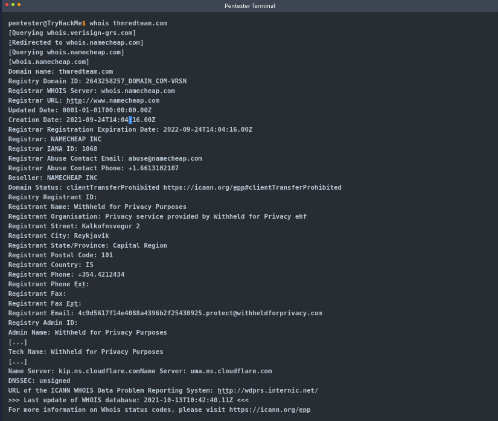
An example:There is quite a lot of valuable information to gain with only a domain name.
After a whois lookup, we might get lucky and find names, email addresses, postal addresses, and even phone numbers.
At the end of the whois query, we find the authoritative name servers for the domain in question.
DNS Queries can be executed with many different tools found on our systems, especially Unix-like systems. One common tool found on Unix-like systems, Windows, and macOS is nslookup.
In the following query, we can see how nslookup uses the default DNS server to get the A and AAAA records related to our domain.
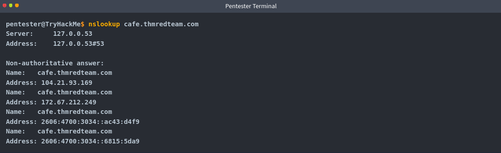
Another tool commonly found on Unix-lik esystems is dig, short for Domain Information Groper.
Dig provides a lot of query options and even allows for specifying a different DNS server to use. For example, we can use Cloudflare’s DNS server: dig @1.1.1.1 tryhackme.com
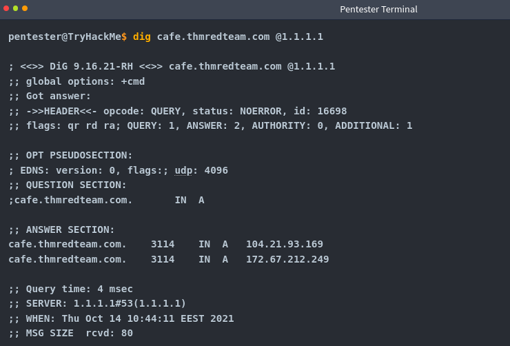
Host is another useful alternative for querying DNS servers for DNS reconds.
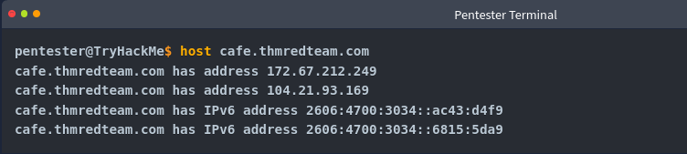
Consider the following example:The final tool that ships with Unix-like Systems is traceroute. Or on MS Windows systems, called tracert.
As the name indicates, it traces the route taken by the packets from our system to the target host.
The console output below shows that traceroute provided us with the routers (hops) connecting us to the target system.
Some routers don’t respond to the packets sent by traceroute though. We don’t see their IP addresses, and a “*” is used to indicate such cases.
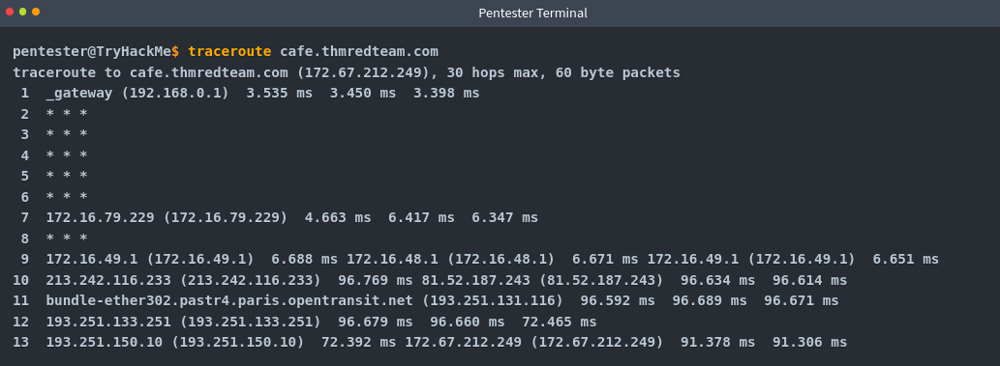
So, in summary, we can always rely on:
whois to query the WHOIS database
nslookup , dig, or host to query DNS server
WHOIS databases and DNS servers hold publicly available information, and querying either does not generate any suspicious traffic.
Moreover, we can rely on traceroute/tracert to discover the hops between our system and the target host.
Advanced Searching
Being able to use a search engine efficiently is a crucial skill. The following table shows some popular search modifiers that work with many popular search engines:
Note: In addition to pdf, other file types to consider are: doc, docx, ppt, pptx, xls, xlsx
Different search engines have different syntax and must be reviewed beforehand.
Search engines crawl the web basically 24/7 to index new web pages and files. Sometimes this can accidentally lead to indexing confidential information. Such information may include:
Documents for internal company use
Confidential spreadsheets with usernames, email addresses, and passwords
Files containing usernames
Sensitive directories
Service version numbers (may be vulnerable or unpatched for example)
Error messages
Combining advanced Google searches with specific terms, documents containing sensitive information or vulnerable web servers can be found. Websites such as “Google Hacking database (GHDB)” collect such terms and are publicly available. Let’s take a look at some of the GHDB queries to see if our client has any confidential information exposed via search engines.
GHDB Contains queries under the following categories:
Footholds
Consider GHDB-ID: 6364, as it uses the query intitle: “index of” “nginx.log” to discover Nginx logs and might reveal server misconfigurations that can be exploited.
Files Containing Usernames
For example, GHDB-ID: 7047 uses the search term intitle:”index of” “contacts.txt” to discover files that leak juicy information.
Sensitive Directories
For example, consider GHDB-ID: 6788, which uses the search term inurl:/certs/server.key to find out if a private RSA key is exposed.
Web Server Detection
Consider GHDB-ID: 6876, which detects GlassFish Server information using the query intitle: “GlassFish Server - Server Running”
Vulnerable Files
For example, we can try to locate PHP files using the query intitle: “index of” “*.php” as provided by GHDB-ID: 7786
Vulnerable Servers
For instance, to discover SolarWinds Orion web consoles, GHDB-ID:6728 uses the query intitle:”index of” errors.log to find log files related to errors.
To learn more about this process, check out the concept of Google Dorking.
Now, some additional resources that can provide valuable information without target interaction are:- Social Media
- Job ads
Social MediaSocial media websites have become very popular for not only personal use but also for corporate use. Some social media platforms can reveal tons of information about the target. This is especially true as many users tend to overshare details about themselves and their work. To name a few, it's worthwhile checking the following:
Social media websites make it easy to collect the names of a given company's employees; moreover, in certain instances, you might learn specific pieces of information that can reveal answers to password recovery questions or gain ideas to include in a targeted wordlist.
Posts from technical staff might reveal details about a company’s systems and vendors. For example, a network engineer who was recently issued Juniper certifications may allude to Juniper networking infrastructure being used in their employer’s environment.
Job Ads
Job advertisements can also tell you a lot about a company. In addition to revealing names and email addresses, job posts for technical positions could give insight into the target company’s systems and infrastructure. The popular job posts might vary from one country to another. Make sure to check job listing sites in the countries where your client would post their ads. Moreover, it is always worth checking their website for any job opening and seeing if this can leak any interesting information.
Note that the Wayback Machine can be helpful to retrieve previous versions of a job opening page on your client’s site.
Specialized Search Engines
WHOIS and DNS related
Apart from what we discussed, there are also third parties that offer paid services for historical WHOIS data. One example is WHOIS History, which provides a history of WHOIS dat aand is useful if the domain registrant didn’t use WHOIS privacy when they registered the domain.
There’s a handful of sites that offer advanced DNS services that are free to use.
Some of these websites offer rich functionality and could have a complete room dedicated to exploring one domain. For now, we’ll focus on key DNS related aspects. The following sites are to be considered:ViewDNS.info
ViewDNS.info
ViewDNS.info offers Reverse IP Lookup. Initially, each web server would use one or more IP addresses, however today it is common to come across shared hosting servers.
With shared hosting, one IP address is shared among many different web servers with different domain names.
With reverse IP lookup however, starting from a domain name or an IP address, you can find the other domain names using specific IP Address(es).
In the figure below, we used reverse IP lookup to find other servers sharing the same Ip addresses used by cafe.thmredteam.com**.**
Therefore, it is important to note that knowing the IP address does not necessarily lead to a single website.
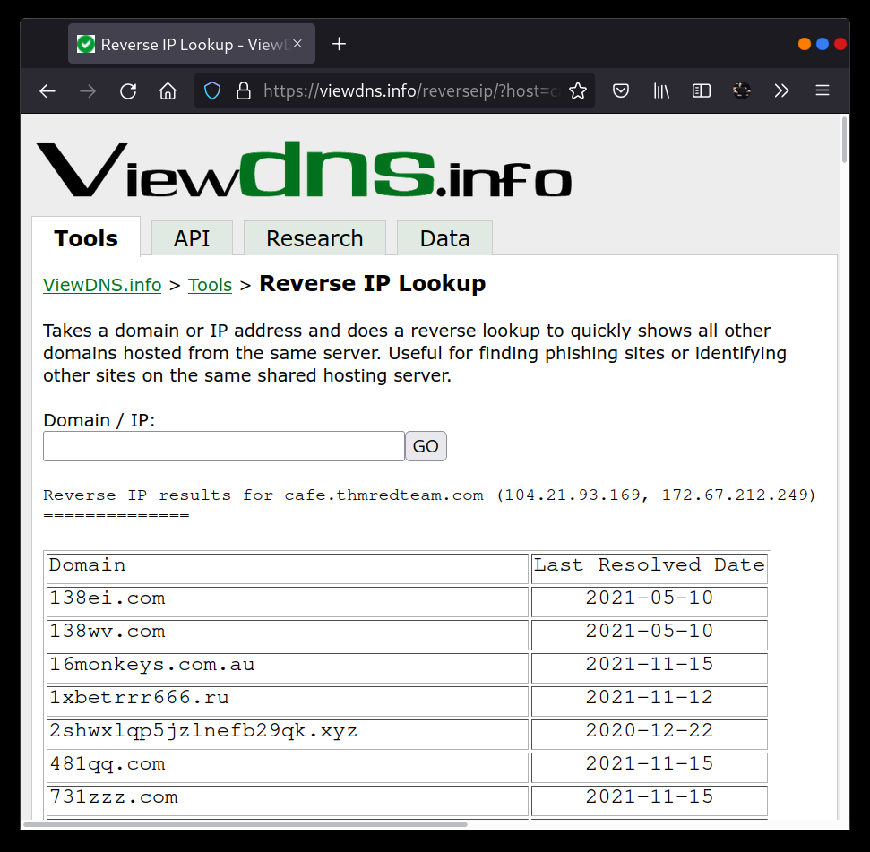
Threat Intelligence Platform
Threat Intelligence Platform requires you to provide a domain name or an IP address, and it will launch a series of tests from malware checks to WHOIS and DNS queries.
The WHOIS and DNS results are similar to the results we would get using whois and dig, but Threat Intelligence Platform presents them in a more readable and visually appealing way.
There is extra information that we get with our report. For instance, after we look up thmredteam.com, we see that Name Server (NS) records were resolved to their respective IPv4 and IPv6 addresses, as shown in the figure below.
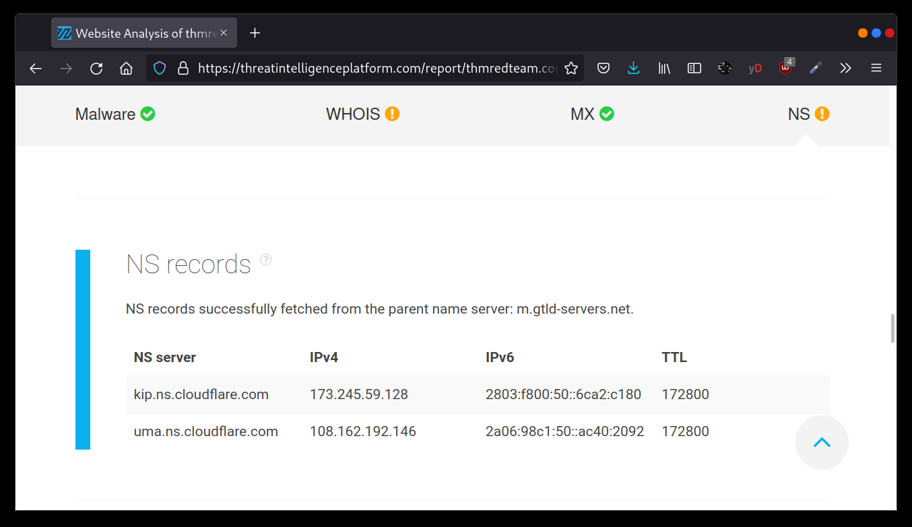
On the other hand, searching for cafe.thmredteam.com also gets us a list of other domains on the same IP address. The result we see in the figure below is similar to the results obtained by using ViewDNS.info
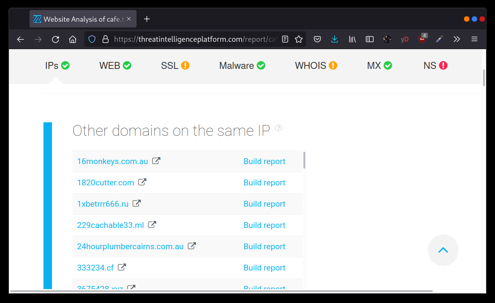
Specialized Search Engines
Censys
Censys Search can provide a lot of information about IP addresses and domains. In this example, we look up one of the IP addresses that cafe.thmredteam.com resolves to.
We can easily infer that the IP address we looked up belongs to Cloudflare.
We see information related to ports 80 and 443, among others.
It is clear that this IP address is used to server websites other than cafe.thmredteam.com
In other words, this IP address belongs to a company other than our client, Organic Cafe.
It’s critical to make this distinction so that we don’t probe systems outside the scope of our contract.
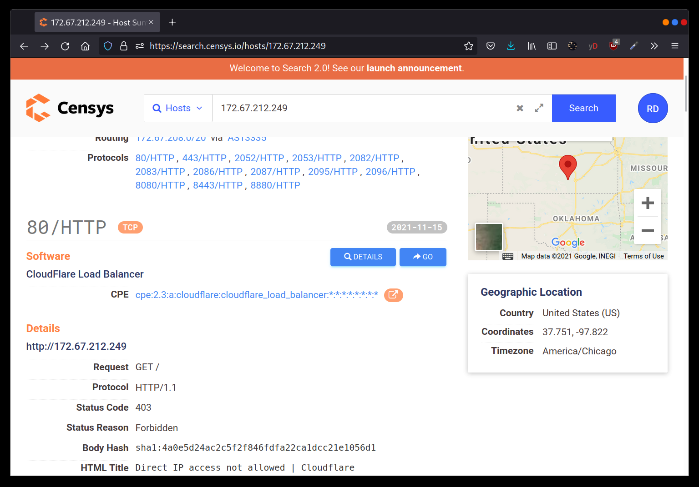
Shodan
Using shodan from the commandline is simple.
To use Shodan from the commandline properly, we first create an account with Shodan.
Then, we configure shodan to use our API key using the command:Shodan init API_KEY
We can use different filters depending on the type of Shodan account.
To learn more about what to do with shodan, it is recommended to look at Shodan CLI (https://cli.shodan.io/)
Let’s now demonstrate a simple example of looking up information about one of the IP addresses we got from “nslookup cafe.thmredteam.com**”**.
Using “shodan host IP_Address” , we can get the geographical location of the IP address and the open ports, as shown below.
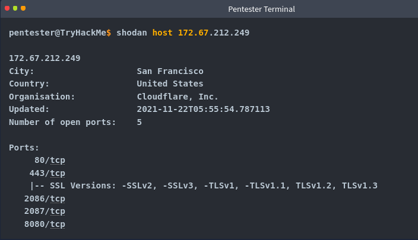
Recon-ng
Recon-ng is a framework that helps automate the OSINT work. It uses modules from various authors and provides a multitude of functionality. Some modules require keys to work;
The key allows the module to query the related online API.
In this task, we will demonstrate using Recon-ng in the terminal.
Recon-ng can be used to find various bits and pieces of info that can aid in an operation or OSINT task.
All the data collected is automatically saved in the database related to your workspace. For instance, you might discover host addresses to lart port scan or collect contact email addresses for phishing attacks.
You can start Recon-ng by running the command recon-ng.
Starting recon-ng will give you a prompt like [recon-ng][default] >
At this stage, you need to select the installed module you want to use.
However, if this is the first time you’re running recon-ng, you will need to install the modules we need.
In this task, we will follow the following workflow:
Create a workspace for your project
Insert the starting information into the database
Search the marketplace for a module and learn about it before installing
List the installed modules and load one
Run the loaded module
Creating a workspace
Run workspaces create WORKSPACE_NAME to create a new workspace for your investigation.
For example, workspaces create thmredteam will create a workspace named thmredteam.
recon-ng -w WORKSPACE_NAME starts recon-ng with the specific workspace.
- Seeding the Database
In recon, we start with one piece of information and then transform it into new pieces of information. For instance, we might start the research with a company name and then use that to discover the domain name(s), contacts and profiles. Then we can use that newly obtained information to transform it further and learn more about the target.
Let’s consider the case where we know the target’s domain name, thmredteam.com, and we would like to feed it to the Recon-ng database related to the active workspace. If we want to check the names of the tables in our database, we can run db schema.
We want to insert the domain name “thmredteam.com” into the domains table. We can do this by using the command db insert domains.
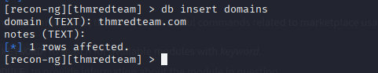
Recon-ng Marketplace
We have a domain name now, so a logical next step would be to search for a module that transforms domains into other types of information. Assuming we are starting from a fresh installation of Recon-ng, we will search for suitable modules from the marketplace.
Before we start installing marketplace modules, there are some useful commands related to marketplace usage:marketplace search KEYWORD to search for available modules with a keyword.
marketplace info MODULE to provide information about the module in question
marketplace install MODULE to install the specified module into Recon-ng
Marketplace remove MODULE to uninstall the specified module.
The modules are grouped under multiple categories, such as discovery, import, recon and reporting.
Moreover, recon is also divided into many subcategories depending on the transform type.
Run marketplace search to get a list of all available modules.
In the terminal below, we search for modules containing domains-
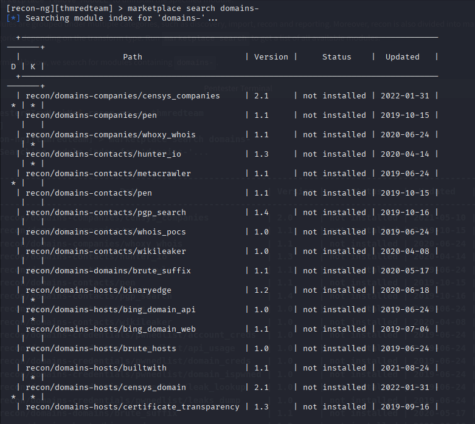
We notice many categories under recon, such as domains-companies, domains-contacts and domains-hosts. This naming tells us what kind of new information we will get from that transformation. For instance, domains-hosts means that the module will find hosts related to the provided domain.
Some modules, like whoxy_whois require a key, as we can tell from the ***** under the K column.
This indicates that the module is not usable unless we have a key to use that service.
Other modules have dependencies, indicated by a ***** under the D column. Dependencies show that third-party Python libraries might be necessary to use the related module.
For example, if we’re interested in recon/domains-hosts/google_site_web. To learn more about any particular module, we can use the command marketplace info MODULE.
This is an essential command that explains what the module does.
For example, marketplace info google_site_web provides the following description:
“Harvests hosts from Google.com by using the ‘site’ search operator. Updates the ‘hosts’ table with the results.”
In other words, this module will use the Google search engine and the “site” operator.
We can install the module we want with the command marketplace install MODULE, for example, marketplace install google_site_web.
Working with installed Modules
We can work with modules using:
modules search to get a list of all the installed modules
modules load MODULE to load a specific module to memory
Let’s load the module that we installed earlier from the marketplace, modules load viewdns_reverse_whois.
To run it, we need to set the required options:
options list to list the options that we can set for the loaded module
options set to set the value of an option.
In a previous step, we have installed the module google_site_web, so let’s load it using load google_site_web and run it with run.
We have already added the domain thmredteam.com to the database, so when the module is run, it will read that value from the database, get new kinds of information, and add them to the database in turn. The commands and results are shown in the terminal output below:
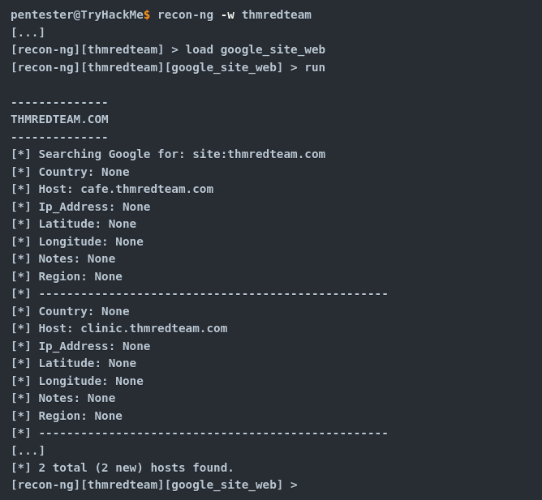
This module has queried Google and found two hosts:cafe.thmredteam.com and clinic.thmredteam.com.
It is possible that by the time you run these steps, new hosts will also appear.
Keys
Some modules cannot be used without a key for the respective service API.K indicates that you need to provide the relevant service key to use the module in question.
keys list - lists the keys
keys add KEY_NAME KEY_VALUE - adds a key
keys remove KEY_NAME - removes a key
Once we have the set of modules installed, we can proceed to load and run them.
modules load MODULE loads an installed module
CTRL + C unloads the module
info to review the loaded module’s info
options list lists available options for the chosen module
options set NAME VALUE
run to execute the loaded module
Maltego
Maltego is an application that blends mind-mapping with OSINT. In general, you would start with a domain name, company name, email etc.
Then you can let this piece of information go through various transforms.
The information collected in Maltego can be used for later stages. For instance, company information, contact names, and email addresses collected can be used to create very legitimate-looking phishing emails.
Think of each block on a Maltego graph as an entity. An entity can have values to describe it. In Maltego’s terminology, a transform is a piece of code that would query an API to retrieve information related to a specific entity.
The logic is shown in the picture below.Information related to an entity goes via a transform to return zero or more entities.
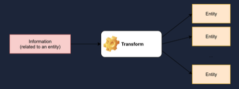
It is crucial to mention that some of the transforms available in Maltego might actively connect to the target system.
Therefore, it is better to know how the transform works before using it if you want to limit yourself to passive reconnaissance.
Every transform might lead to several new values. For instance, if we start from the “DNS Name” cafe.thmredteam.com , we expect to get new kinds of entities based on the transform we use.
For instance, “To IP Address” is expected to return IP Addresses as shown next.
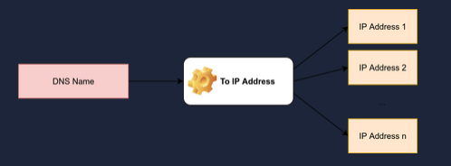
One way to achieve this in Maltego is to right-click on the “DNS Name” cafe.thmredteam.com and choose:
Standard Transforms
Resolve to IP
To IP Address (DNS)
After executing this transform, we would get one or more IP addresses, as shown below.
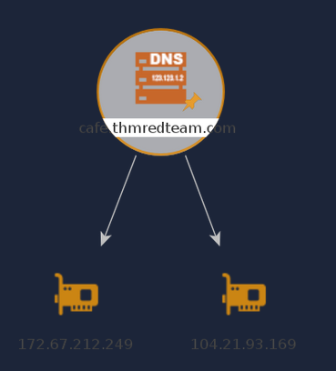
Then, we can choose to apply another transform for one of the IP addresses. Consider the following transform:
DNS from IP
To DNS Name from Passive DNS
This will populate our graph with new DNS names.
With a couple more clicks, we can then get the location of the IP Address, and so on.
The result might be similar to the image below.
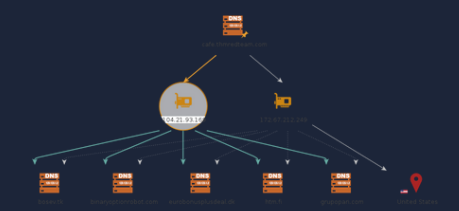
The above two examples should give you an idea of the workflow using Maltego.
You can observe that all the work is based on transforms, and Maltego will help you keep your graph organised. You would get the same results by querying the different online websites and databases; however, Maltego helps you get all the information you need with a few clicks.
We experimented with whois and nslookup in a previous task.
You get plenty of information, from names, emails, IP addresses etc.
The results of whois and nslookup are shown visually in the following Maltego graph.
Interestingly, Maltego transforms were able to extract and arrange the information returned from the WHOIS database.
Although the returned email addresses are not helpful due to privacy protection, it is worth seeing how Maltego can extract such information and how it’s presented.
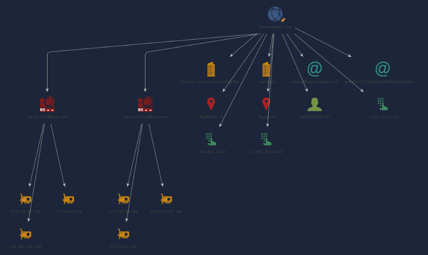
Now that we have learned how Maltego’s power stems from its transforms, the only logical thing is to make Maltego more powerful by adding new Transforms. Transforms are usually grouped into different categories based on data type, pricing, and target audience. Although many transforms can be used using Maltego Community Edition and free transforms, other transforms require a paid subscription. A screenshot is shown below to give a clearer idea
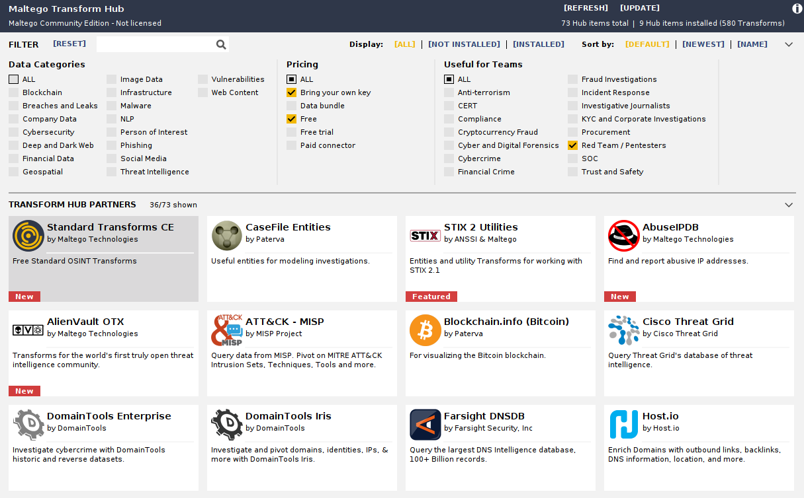